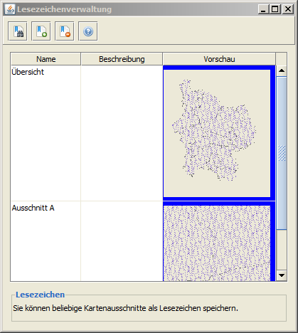
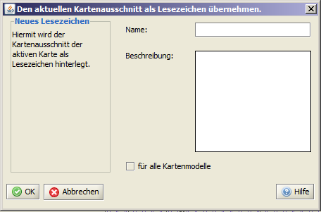

Lesezeichen Funktion
Mit Hilfe dieser Funktion, können Kartenausschnitte als Lesezeichen gespeichert und zwischen bereits existierenden Lesezeichen navigiert werden.
Die Lesezeichenverwaltung kann innerhalb der Werkzeugleiste über den  Button geöffnet werden.
Innerhalb der Übersicht werden die vorhandenen Lesezeichen angezeigt -
nachdem durch einen Klick mit der linken Maustaste auf den Namen das gewünschte Lesezeichen selektiert wurde,
kann durch Aktivieren des Buttons zum entsprechenden Kartenausschnitt gezoomt werden. Button geöffnet werden.
Innerhalb der Übersicht werden die vorhandenen Lesezeichen angezeigt -
nachdem durch einen Klick mit der linken Maustaste auf den Namen das gewünschte Lesezeichen selektiert wurde,
kann durch Aktivieren des Buttons zum entsprechenden Kartenausschnitt gezoomt werden.

Mit Hilfe des Buttons können vorher selektierte Lesezeichen wieder entfernt werden.
Das Hinzufügen neuer Lesezeichen kann sowohl innerhalb der Lesezeichenverwaltung, als auch über die Werkzeugleiste mit Hilfe des  Buttons vorgenommen werden.
Innerhalb des sich öffnenden Dialoges können Name - Beschreibung - und Gültigkeit (wird kein Häkchen gesetzt gilt das Lesezeichen nur für das aktuelle Kartenmodell) festgelegt werden. Buttons vorgenommen werden.
Innerhalb des sich öffnenden Dialoges können Name - Beschreibung - und Gültigkeit (wird kein Häkchen gesetzt gilt das Lesezeichen nur für das aktuelle Kartenmodell) festgelegt werden.

|